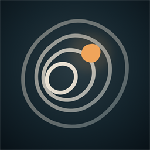

Being With
共 处
在 听
×
Slow Living
生 活 碎 片
KEEP A MOMENT
留下一片今天
一张照片，或一句想说很久的话
A RETURNING ECHO
有一段旧时刻，和这片生活碰面了
去看看
×
LIVE
和它说一句
这片生活的边界
这片生活用什么、不用什么，都由你定。收回后，相关的那部分也会一起停用。
只属于我
不回应、不进入地形、不成为回声来源
可成为地形证据
需要更多独立时刻才会形成地貌
可被未来轻轻提起
关闭后不会再用它连接新的生活
🫧
让它飘走吗？
记忆会像气泡一样消散，这个动作无法撤销。
留 下
放 走
在你开始之前
·
它不是一个人，也不会假装成为人。它是一个有边界的陪伴者。
·
你可以只来这里坐坐、聊几句，也可以主动记录生活；什么都不留也完全可以。
·
它会根据你留下的片段形成自己的判断，但这些判断
可能看错
。
·
任何你不喜欢的判断、回声或回应，都可以当场否认、隐藏、删除——解释权在你手里。
我 知 道 了
这段说明随时可以在「我们」里重新看到
这句回应，你想告诉它什么？
你改完后，这里会以你的版本为准；它原来的话会保留记录，但不再显示。
取 消
改 好 了
先 不 说
记录一片生活
先留下这一刻。其余的，晚点再说。
图 片
语 音
--
需要文字时，再生成转写
只属于我
不回应、不进入地形、不成为回声来源
更多边界
可成为地形证据
仍需跨至少 7 天、3 个独立时刻才可能形成地貌
可被未来轻轻提起
关闭时只保存；旧内容不会被拿来制造回声
留 下
Fragment thread
这一片里的回应
×
它正在看这一句…
回 一 句
这句回应，只留在这片生活里。
×
‹ 我 们
你 托 付 的
×
2026 · 七月
那些你怕自己
忘了的
，我替你捧着。
0
今 日
0
待 办
0
已 完 成
进 行 中
紧 急
重 要
轻 松
已 完 成
托 付 一 条 备 忘
时 间
重 要 度
轻 松
重 要
紧 急
取消
放 进 备 忘
Inner Terrain
地 形
这里还没有起伏。
我们可以只相处，不急着得出结论。
Us
我 们
AI

陪你看见，而不是替你定义
这是一个 AI 陪伴者，不是人类，也不替代心理咨询或医疗。它可以记错，你随时拥有确认、改写和删除的权利。
按你的边界运行
生活碎片默认只保存，不会自动进入待办。
同步中
它怎样陪你
更温柔
有分寸
更直接
默认回复长度
一句
一段
展开说
它怎样回应生活碎片
安静看着
偶尔回应
每条回应
边界与掌控
我明确托付的备忘
›
生活媒体
原始语音 · 图片 · Live Photo
已改变的行为
还没有校正记录
记忆与数据
暂停记忆形成
开启后，它不会把新的共处或生活沉淀为长期记忆；危机安全回应仍会工作。
导出我的全部数据（JSON）
›
永久删除全部数据
›
删除会清空你在这里留下的一切。操作需要二次确认，且无法撤销。
相处调整
现在还没有相处调整记录。
关于它
重新看进入时的四句话
›
共 处
生 活
地 形
我 们